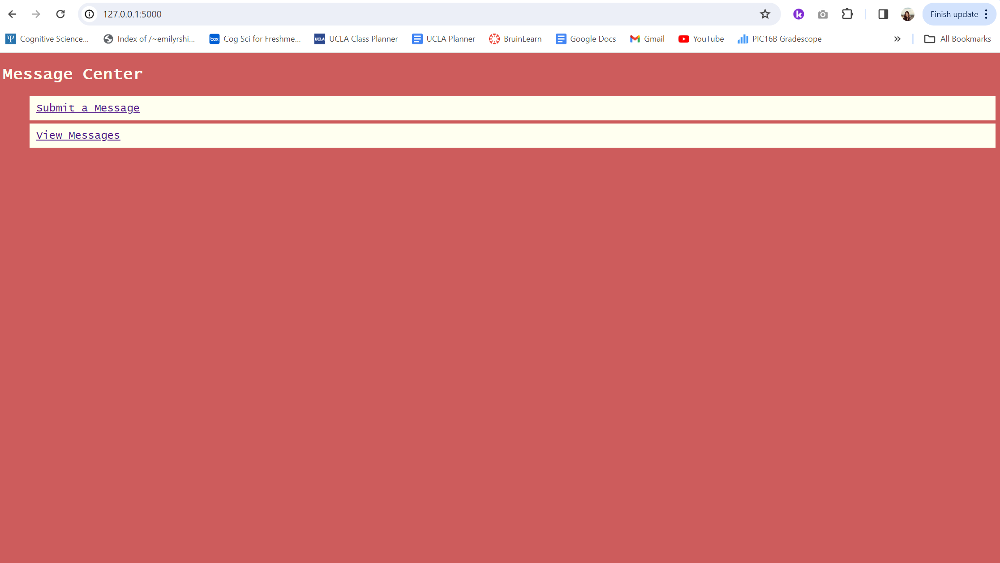
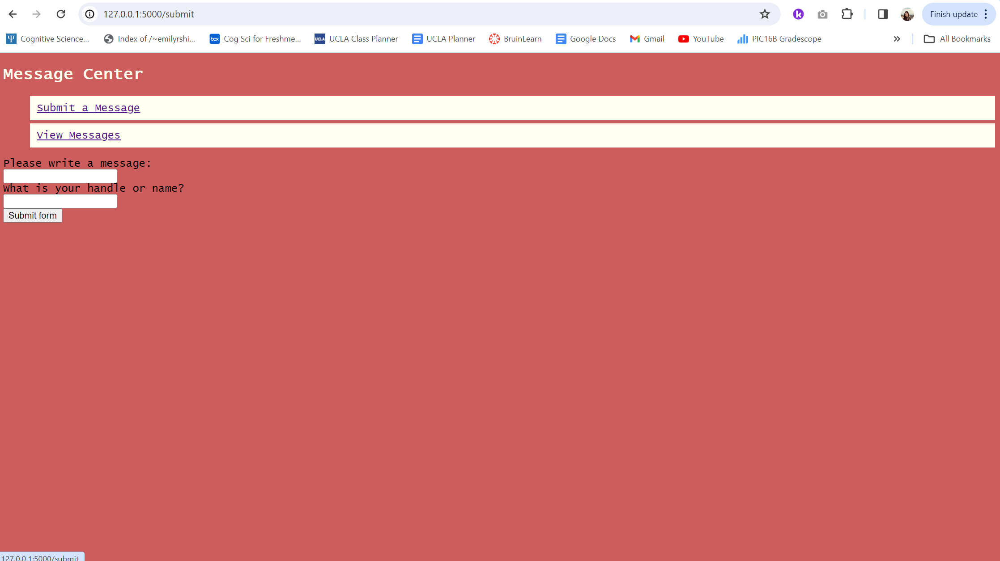
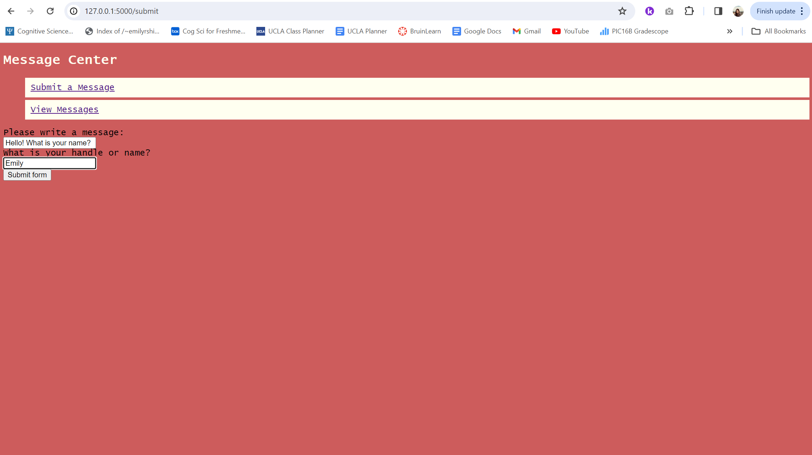
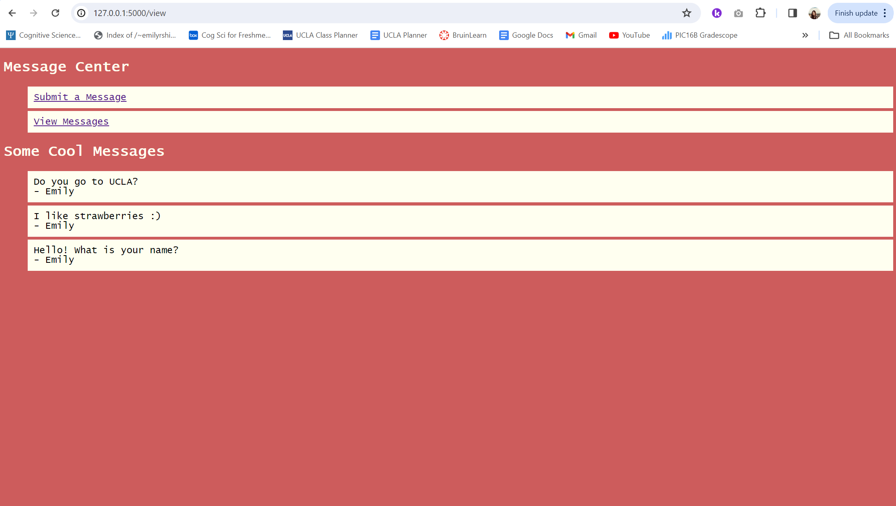

# header for HTML files
<!doctype html>
# link to a stylesheet (style.css) in the 'static' directory
<link rel="stylesheet" href="{{ url_for('static', filename='style.css') }}">
# main title for base.html
<title>{% block title %}{% endblock %} - Home Page </title>
<nav>
<h1>Message Center</h1>
<ul>
# renders as a link to either submit or view messages
<li><a href="{{ url_for('submit') }}">Submit a Message</a></li>
<li><a href="{{ url_for('view') }}">View Messages</a></li>
</ul>
</nav>
<section class="content">
<header>
{% block header %}{% endblock %}
</header>
{% block content %}{% endblock %}
</section>Creating a Database and Website Using Flask
To create simple web pages, we begin by installing Flask.
Flask is a Python web framework used to create and enable web apps simply.
Flask Setup
To setup flask, enter the Anaconda Prompt terminal window and type in conda activate PIC16B-24W and pip install flask. Then, set the Flask environment to “development” through set FLASK_ENV=development. This allows the developer to debug by viewing the specific error messages through the terminal. When the web page is ready to be viewed, simply cd to the correct directory location and type in flask run.
Writing the Templates Files (HTML)
Within a newly created templates\ folder, we will create three HTML files that will be the layout for our three web pages: base.html, submit.html, and view.html.
base.html acts as the home page that the user first lands on upon visiting the link. It contains links to the following web pages, submit.html and view.html, that serve other functions. It also contains a content section where the messages will later appear in. The styling of the page is due to the import of style.css which adds color and changes the font.
base.html
submit.html is the page where the user visits to submit a message. It extends base.html in that it has the same styling and content section where messages appear. Here, there are labels and input boxes that allow the user to input a message and handle (username). Lastly, there is a button to submit the form, which sends the information to the data table within the database to then be viewed in view.html.
submit.html
{% extends 'base.html' %}
{% block header %}
<h1>{% block title %}Submit a Message{% endblock %}</h1>
{% endblock %}
{% block content %}
<form method="post">
<label for="message">Please write a message:</label><br>
<input type="text" name="message" id="message"><br>
<label for="handle">What is your handle or name?</label><br>
<input type="text" name="handle" id="handle"><br>
<input type="submit" value="Submit form">
</form>
{% endblock %}view.html is the page where the user visits to view submitted messages. It extends base.html in that it has the same styling and content section where messages appear. Here, within the “content” block, a for loop retrieves the information in the database to then display the handle and corresponding message in a dictionary-like format.
It takes advantage of the fact that Jinja tags support indexing of objects, where message[0] contains the handle and message[1] contains the message.
view.html
{% extends 'base.html' %}
{% block title %}
View Messages
{% endblock %}
{% block content %}
<h1>Some Cool Messages</h1>
<ul>
# rand_mess passed in by view() function in app.py
{% for message in rand_mess %}
<li>{{ message[0] }}: {{ message[1] }}</li>
{% endfor %}
</ul>
{% endblock %}The Five Functions of app.py
get_message_db()
get_message_db() creates the database and checks if there is a database called message_db in the g attribute of the app through the try block. If that is not found, within the except block, a connection that is an attribute of g to the database must be made. Additionally, the table messages needs to be checked if it exists in the database or not. If not, create it using the SQL command CREATE TABLE IF NOT EXISTS and ensure that there is both a handle and message column (both being of text type).
Lastly, this function returns the g.message_db connection. import sqlite3 is necessary for the creation of the database.
def get_message_db():
try:
return g.message_db
except AttributeError:
g.message_db = sqlite3.connect("message_db.sqlite")
cursor = g.message_db.cursor()
cursor.execute('''CREATE TABLE IF NOT EXISTS messages (
handle TEXT,
message TEXT)''')
g.message_db.commit()
return g.message_dbinsert_message(request)
insert_message() extracts the message and handle from request. Then, it assigns the inputted message and handle to variables to then be inserted into the datatable under their corresponding columns. Lastly, the database connnection is closed.
def insert_message(request):
message = request.form['message']
handle = request.form['handle']
# Get the database connection
db = get_message_db()
# SQL query to insert the message into the 'messages' table
insert_query = "INSERT INTO messages (handle, message) VALUES (?, ?)"
cursor = db.cursor()
# Execute the SQL query with the handle and message as parameters
cursor.execute(insert_query, (handle, message))
# Commit the changes to the database
db.commit()
db.close()submit()
submit allows the submitted information to be entered into the database. When a submission has been made, the page reloads and allows for a new submission to be made with empty entry fields.
The @app.route() line is necessary for directing the webpage to that particular rendered html page within the url. In this case, the main url plus /submit at the end will land the user on the rendered submit.html page.
@app.route('/submit', methods=['GET', 'POST'])
def submit():
# POST used to send data to a server to create/update
if request.method == 'POST':
# this function handles inserting a user message into the db
insert_message(request)
# render submit.html
return render_template('submit.html')
else:
# if nothing is posted, just render the same page again
return render_template('submit.html')random_messages(n)
random_messages(n) takes in a number of messages as a parameter. It opens a database and selects the handle and corresponding message by random and returns that information as a variable.
def random_messages(n):
# Get the database connection
db = get_message_db()
# Create a cursor object to execute SQL commands
cursor = db.cursor()
# SQL query to insert the message into the 'messages' table
cursor.execute('''SELECT handle, message FROM messages ORDER BY RANDOM() LIMIT ?''', (n,))
messages = cursor.fetchall()
# Commit the changes to the database
db.commit()
# close the db
db.close()
return messagesview()
view calls random_messages with a parameter of five, which would be the number of random messages in the collection returned. It then sends the returned information, being the messages and handles, as a variable to view.html to then be viewed.
@app.route('/view')
def view():
# grabs 5 (or less) random messages
rand_mess = random_messages(5)
# passes the messages as an argument to render_template()
return render_template('view.html', rand_mess = rand_mess)CSS Styling
Lastly, to add some style to our webpage, we will change the font and incorporate color. The font is changed to “Courier New” of the “Lucida Console” font-family, while the overall background color is changed to #CD5C5C which resembles a pretty pinkish-red. The background color of the text is changed to #FFFFF0, which is a creamy white color.
body {
font-family: "Lucida Console", "Courier New", monospace;
background-color: #CD5C5C;
}
h1 {
color: #FFFFF0;
}
ul {
list-style-type: none;
}
li {
background-color: #FFFFF0;
padding: 10px;
margin-bottom: 5px;
}My Webpage in Action
Upon landing on the url, the first page is the rendered base.html. Here, you see the links to submit and view messages.

After clicking the link to submit a message, you land on the rendered submit.html where you are able to fill in the forms to write a message and give a corresponding name.


After submitting a few messages, clicking on the link to view messages takes you to the rendered view.html. Here, you can view the submitted messages (in random order).

That’s all! Hope you enjoyed this short tutorial!
Link to GitHub repo (source code):
https://github.com/emilyrshi/PIC16B_HW3